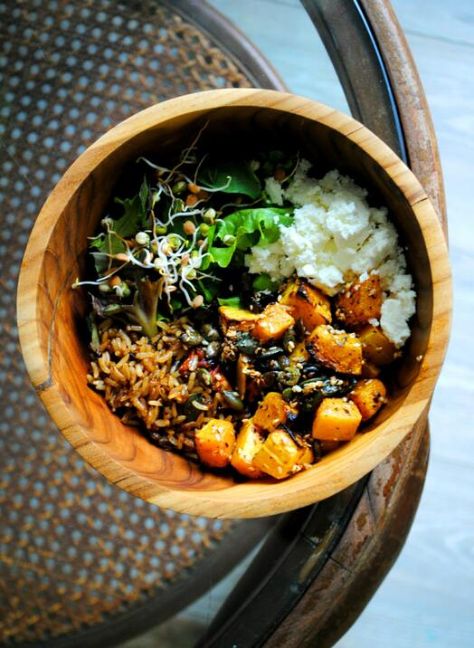

Green Curry Buddha Bowl

Description
As the name implies, Buddha Bowl is a vegetarian dish created in Toronto.
It's a simple and healthy meal consisting of portions of several food mixed together.
Since it's a trendy and instagramish dish, you've got to know some color theory
to actually make it look pretty on your feed.
Ingredients
For the meal
- 4 cups of cooked brown rice
- 2 cups of broccoli florets
- 1 cut of julienned carrots
- 1/4 head purple thinly sliced cabbage
- 8 sliced crimini mushrooms
- 2 tsp of olive oil
- cilantro
- lime wedges
For the sauce
- 1 cup of raw cashews (love it)
- 2 tbsp of green curry paste (be careful, it's FIRE)
- 14oz can of coconut cream (delicious)
- 1 tbsp of lime juice
- 2 tsp of fish sauce
- 2 tsp of brown sugar
- 1/2 tsp of salt
Steps
- Since we're lazy hungry people, just combine all the ingredients for the curry sauce
in a blender and blend for 2 minutes.
- In a small bowl, coat the mushrooms in the olive oil. Set a pot fitted with a steaming basket and 1 inch of water in it over low heat.
Place the broccoli and mushrooms in the basket and steam until the broccoli is tender, about 5 minutes.
- Assemble bowl by layering the veggies over the brown rice and drizzling with curry sauce.
Garnish with Toasted coconut, cilantro and a squeeze of lime.
- Enjoy!
Source : The Modern Proper